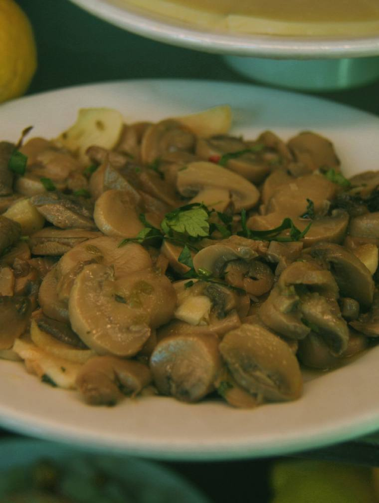

Entrées espagnoles et tapas

Entrées espagnoles et tapas
Champiñones a la andaluza
Champignons à l’andalouse
Préparation : 10 min
Cuisson : 15 min
Ingrédients (pour 4 personnes, en tapas)
- 12 gros champignons de Paris
- ½ oignon
- 2 gousses d’ail
- 35 g d’amandes mondées
- 120 ml de vin blanc
- ½ cuillère à café de paprika fumé doux
- 3 cuillères à soupe d’huile d’olive vierge extra
- persil, sel, poivre
Quantités adaptées. Les temps de cuisson ne sont pas recalculés.
- Piler ail, amandes, persil et une pincée de sel en pâte : c’est le majado.
- Saisir les champignons en tranches épaisses dans les deux tiers de l’huile, 2 minutes par face, réserver.
- Revenir l’oignon 3 minutes dans le reste d’huile. Remettre les champignons, ajouter paprika, sel, poivre.
- Verser le vin, réduire de moitié. Incorporer le majado, cuire 1 minute, parsemer de persil.
AstuceLe vin blanc peut être un fino ou un oloroso sec de Jerez.
D’après la recette d’Albert Bevia, Spain on a Fork. Traduit et reformulé.